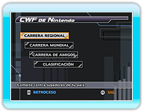
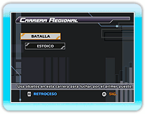
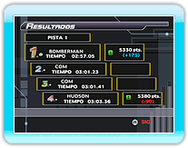
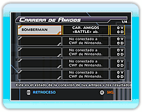
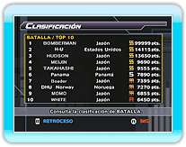

16 |
Conexión Wi-Fi de Nintendo |
 |
|

Selecciona
Cuando te hayas conectado, se mostrará la pantalla de selección de modo CWF de Nintendo. Elige el modo CWF de Nintendo en el que jugar y pulsa
● CARRERA REGIONAL
● CARRERA MUNDIAL
● CARRERA DE AMIGOS
● CLASIFICACIÓN
Hay dos modos para elegir. Selecciona el modo en el que quieres participar y pulsa

● BATALLA
● ESTOICO
Elige a un personaje y su equipo, y luego una pista para comenzar a correr. La pista se selecciona aleatoriamente de entre aquellas elegidas por los miembros.
Al terminar una carrera, tu valoración aumentará o disminuirá según el puesto que consigas.
● SALA DE AMIGO 
● Únete a un amigo
Si competías con amigos, se actualizarán los
resultados con cada amigo.
● Registra a un amigo
Tu clasificación se determina al enviar y recibir los puntos de clasificación de los modos BATALLA y ESTOICO, o los tiempos de carrera del modo CONTRARRELOJ.
Al elegir el tipo de clasificación que deseas ver, aparecerán los 10 mejores clasificados de cada categoría. También puedes ver tu posición y la de tus amigos. La clasificación se actualiza automáticamente cuando seleccionas un tipo de clasificación.
*
|
 |
 |
 |